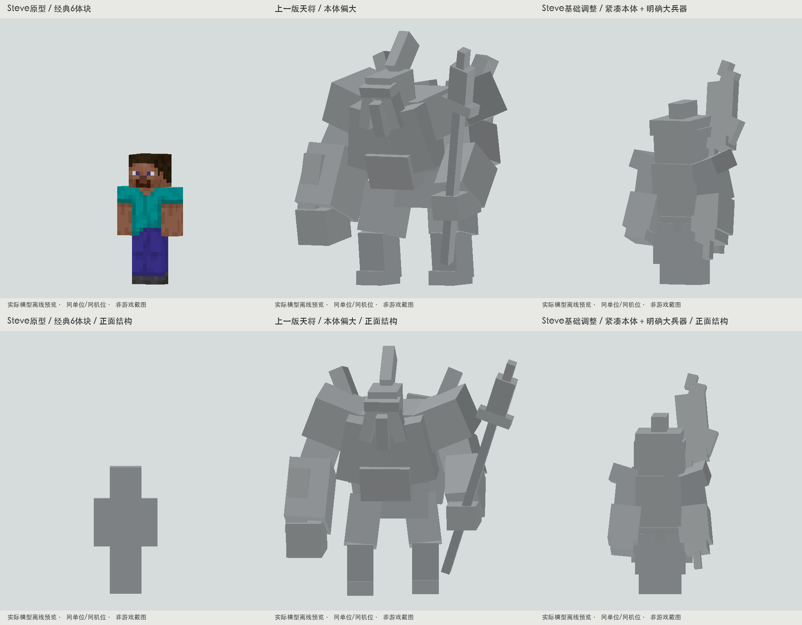
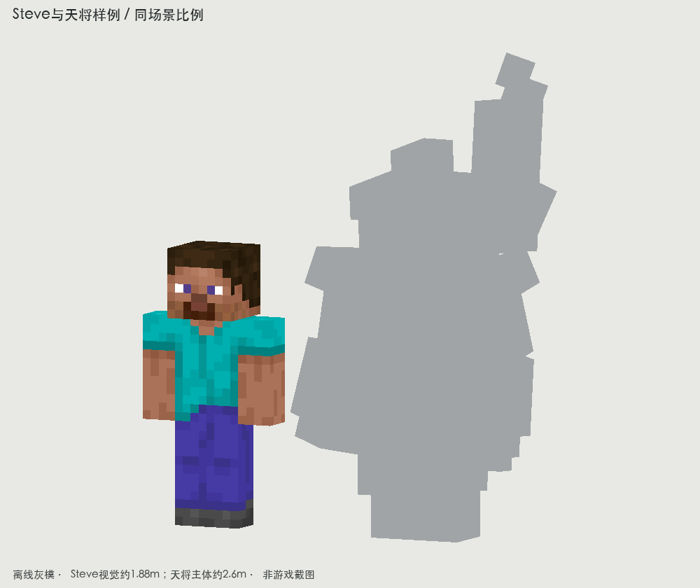
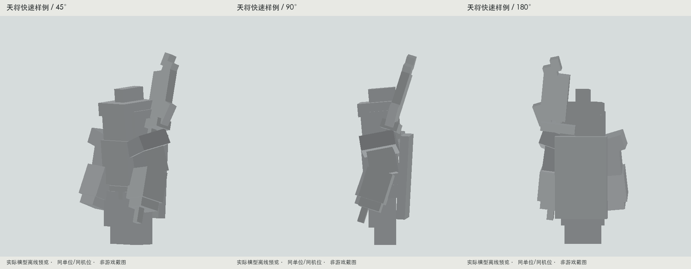

左：原版经典宽臂Steve，头8×8×8、躯干8×12×4、手臂4×12×4、腿4×12×4，共6个主块。皮肤从本机1.20.1客户端读取，只作研究渲染，不放进Dynasty资源。玩家碰撞身高1.8m，图中视觉模型约1.88m。
中：上一版天将灰模。右：基于Steve关节关系制作的紧凑天将样例；主体约2.6m，肩胸稍厚、肘部弯曲、重心前压，主兵器的切削面加宽。不是最终纹理或已接入游戏的成品。



本轮实际查看：灾变Scylla与Maledictus的本机隔离实机截图；铁魔法作者展示的Dead King；暮色幽灵骑士官方模型源码（HumanoidModel骨架）。暮色画廊本页主要是场景，未把它当Boss模型图片研究。